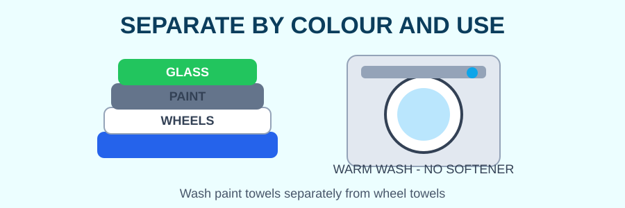

Why separate towels by use
Microfiber picks up grit. A towel used on wheels, door jambs or exhaust tips can hold abrasive particles even after washing. Keep towels for paintwork separate from towels for wheels, glass and interior, and use colour to tell them apart at a glance. If a towel drops on the ground, set it aside for washing. Do not use it on paint until it has been washed and inspected.
Towel types at a glance
| Type | Typical use | What to look for |
|---|---|---|
| Plush / thick pile | Drying, buffing wax and sealant | Soft, thick fibres; no scratchy edge |
| Medium pile, general purpose | Wiping panels, door jambs, trim | Balanced absorbency and durability |
| Waffle weave | Glass and drying | Flat weave that leaves fewer streaks on glass |
| Short pile / suede | Glass finishing, screens | Smooth face for a final buff |
| Twisted loop drying towel | Drying large panels | Very absorbent; wring gently, do not twist hard |
Inventory template - copy and fill in your towels
| ID | Colour | Type | Size | Use only for | Qty | Condition | Last washed |
|---|---|---|---|---|---|---|---|
| Example: P-01 | Blue | Plush | 40 x 40 cm | Paint: buffing only | 4 | Good | 2026-06-07 |
| Example: G-01 | White | Waffle weave | 40 x 40 cm | Glass only | 3 | Good | 2026-06-07 |
| Example: W-01 | Grey | General purpose | 40 x 40 cm | Wheels and jambs only | 4 | Fair - check edges | 2026-06-07 |
| Example: D-01 | Green | Twisted loop | 60 x 90 cm | Drying only | 2 | Good | 2026-06-07 |
Suggested starter set: 4 paint towels, 3 glass towels, 4 wheel/jamb towels, 2 drying towels, and 3 interior towels. Add more as needed, and keep the colour code consistent.
How to wash microfiber towels
- Shake each towel outdoors and inspect for grit, leaves or hard debris. Pick debris off by hand.
- Sort by use and colour. Wash paint towels separately from wheel towels.
- Wash in warm water with a small amount of plain liquid laundry detergent, as the detergent label directs. Do not use fabric softener or dryer sheets.
- Do not use bleach. Do not wash microfiber with cotton towels that shed lint, or with items that have hooks or zips that can snag fibres.
- Rinse well. If towels still feel soapy, run an extra rinse.
- Dry on low heat or air-dry. High heat can damage fibres. Remove promptly and fold cleanly.
- Store in a closed, clean container or bag, away from dust and grit.
Do and do not
| Do | Do not |
|---|---|
| Inspect before every use, especially edges | Use a towel that fell on the ground on paint |
| Wash after a dirty job, before towels sit for days | Leave wet towels bunched up in a bucket |
| Keep wheel towels clearly marked | Mix wheel and paint towels in one pile |
| Retire rough, torn or gritty towels to non-paint jobs | Keep using a towel that feels scratchy on paint |
Washing tracker - wash log
| Date | Towel IDs washed | Load type | Detergent and temperature | Drying method | Notes / towels retired |
|---|---|---|---|---|---|
| Example: 2026-06-07 | P-01, G-01, D-01 | Paint and glass only | Plain liquid detergent, warm wash | Low heat, then air-dry | None retired |
| Example: 2026-06-07 | W-01 | Wheels only, separate load | Plain liquid detergent, warm wash | Air-dry | One towel moved to jamb-only use |
When to retire a towel
- It feels rough, has a hard or melted patch, or a torn or frayed edge.
- It no longer absorbs water well after a correct wash and rinse.
- It has a stain or smell that does not come out, or visible grit trapped in the fibres.
- It was used with a product that should not be reused on paint. Retire it to a non-paint job or dispose of it as the product label directs.
For more car care guides, see Car Care Guy at carcareguy.com.